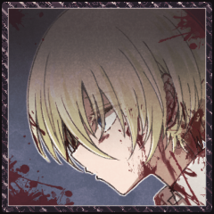
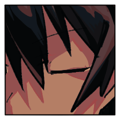
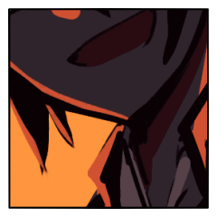
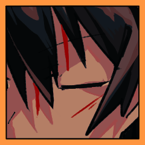
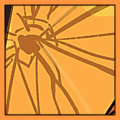

◆裁判
GM
小道具の受け渡しなどあればいまのうちにどうぞ。
GM
小道具受け渡しないっぽいのでこっちの仕込を先に宣言します
“赤い靴”
＊「眠り鼠のポット」「免罪符」を入手。
[ “赤い靴” ] ポット : 0 → 1
[ “赤い靴” ] 免罪符 : 0 → 1
エール
＊仕込の宣言。
「免罪符」「ウサギのお守り」入手。
クラレット
＊仕込で「ウサギのお守り」「日刻みの時計」を入手
[ エール ] ウサギのお守り : 0 → 1
[ エール ] 免罪符 : 0 → 1
[ クラレット ] ウサギのお守り : 0 → 1
[ クラレット ] 日刻みの時計 : 0 → 1
[ クラレット ] 日刻みの時計 : 1 → 0
GM
では、全員ダイスを振ってください 1d6+才覚です
“赤い靴”
1d6+5 行動順決定 (1D6+5) ＞ 4[4]+5 ＞ 9
クラレット
1d6+4+2 先制値（＋才覚＋日刻みの時計） (1D6+4+2) ＞ 4[4]+4+2 ＞ 10
裁判 ラウンド1
エール

GM
割り込みとかはないのでどんどん判定していいよ
クラレット
2d6+4+1+1-2=>7 判定（＋才覚＋ギミック凶器＋万能－霞斬1回目） (2D6+4+1+1-2>=7) ＞ 7[5,2]+4+1+1-2 ＞ 11 ＞ 成功
“赤い靴”
＊衣装で1点軽減し、3点を背水の脚で受けます
[ 背水の脚 ] HP : 19 → 16
クラレット
2d6+4+1+1+2=>7 判定（＋才覚＋ギミック凶器＋万能＋霞斬2回目） (2D6+4+1+1+2>=7) ＞ 7[6,1]+4+1+1+2 ＞ 15 ＞ 成功
[ 背水の脚 ] HP : 16 → 12
“赤い靴”
＊補助動作でポットを使用。クラレットに3Rの封印。
[ クラレット ] 封印(R1靴) : 0 → 3
“赤い靴”
＊割り込める人がいないので、そのまま判定しますね。
“赤い靴”
2d6+5+1>=7 才覚判定(万能) (2D6+5+1>=7) ＞ 11[5,6]+5+1 ＞ 17 ＞ 成功
[ 背水の脚 ] HP : 12 → 11
背水の脚
2d+7 裁判判定 (救世主強化,陣形!!) (2D6+7) ＞ 8[4,4]+7 ＞ 15
背水の脚
c(8+5) 威力 c(8+5) ＞ 13
[ “赤い靴” ] ポット : 1 → 0
[ クラレット ] HP : 21 → 8
女王の脚
＊女王命令。センバ＞クラレットの順で攻撃。
女王の脚
2d+10+5 センバ分 (救世主強化,陣形!!) (2D6+10+5) ＞ 5[1,4]+10+5 ＞ 20
女王の脚
c(11+5+1+5) 威力 c(11+5+1+5) ＞ 22
センバ
2d6+3=>7 判定（＋愛） (2D6+3>=7) ＞ 4[3,1]+3 ＞ 7 ＞ 成功
センバ
c(20-3-1) 防壁 第二ボタン c(20-3-1) ＞ 16
[ センバ ] HP : 25 → 9
女王の脚
2d+10+5 裁判判定 (救世主強化,陣形!!) (2D6+10+5) ＞ 9[4,5]+10+5 ＞ 24
女王の脚
c(11+5+1+5) 威力 c(11+5+1+5) ＞ 22
センバ
＊あっこれ威力22か！？なら計算間違えてるかも。2点少なく計算しちゃっていたので2点追加で減らしときます失敬。
[ センバ ] HP : 9 → 7
センバ
2d6+3=>7 判定（＋愛） (2D6+3>=7) ＞ 6[4,2]+3 ＞ 9 ＞ 成功
センバ
c(22-3-1) 防壁 第二ボタン c(22-3-1) ＞ 18
[ センバ ] HP : 7 → 0
センバ
2d6+3-0+1 判決表+第二ボタン (2D6+3-0+1) ＞ 6[1,5]+3-0+1 ＞ 10
クラレット
あ！ 待ってください 脅威度が3のままかも
GM
12～ 無罪！HPが0となる際に受けた不利な効果を無効とし、HPは0になる前の値に戻す。前科は増える。
[ センバ ] HP : 0 → 7
[ センバ ] 前科 : 0 → 1
エール
4d6 救済 (4D6) ＞ 14[4,2,5,3] ＞ 14
[ センバ ] HP : 7 → 21
エール
2d6+3=>7 判定（＋猟奇） (2D6+3>=7) ＞ 7[3,4]+3 ＞ 10 ＞ 成功
エール
1d6+2+1 ダメージ 威力 発狂 (1D6+2+1) ＞ 3[3]+2+1 ＞ 6
エール
＊1Rの間2点のダメージ軽減効果を得ます。
[ 背水の脚 ] HP : 11 → 6
センバ
3d6 救済回復値算出 (3D6) ＞ 11[2,4,5] ＞ 11
[ クラレット ] HP : 8 → 19
[ クラレット ] HP : 8 → 20
[ クラレット ] HP : 20 → 19
[ クラレット ] 封印(R1靴) : 3 → 0
センバ
2d6+4=>7 判定（＋猟奇） (2D6+4>=7) ＞ 8[4,4]+4 ＞ 12 ＞ 成功
センバ
1d6+3+0 ダメージ (1D6+3+0) ＞ 3[3]+3+0 ＞ 6
センバ
＊鋭気忘れました……入れます……す、すみません
センバ
1d6+3+4 (1D6+3+4) ＞ 1[1]+3+4 ＞ 8
[ センバ ] HP : 21 → 17
“赤い靴”
＊衣装で引いて16点を女王の脚で肩代わり。
センバ
あっそうだった、思ったより、いっているな。
[ 女王の脚 ] HP : 64 → 49
[ 女王の脚 ] HP : 49 → 48
[ センバ ] とうみつ : 1 → 0
[ センバ ] HP : 17 → 23
裁判 ラウンド2
クラレット

“赤い靴”

クラレット
2d6+4+1+1-2=>7 判定（＋才覚＋ギミック凶器＋万能－霞斬1回目） (2D6+4+1+1-2>=7) ＞ 8[5,3]+4+1+1-2 ＞ 12 ＞ 成功
[ 女王の脚 ] HP : 48 → 45
クラレット
2d6+4+1+1+2=>7 判定（＋才覚＋ギミック凶器＋万能＋霞斬2回目） (2D6+4+1+1+2>=7) ＞ 6[2,4]+4+1+1+2 ＞ 14 ＞ 成功
[ 背水の脚 ] HP : 6 → 2
[ 背水の脚 ] HP : 2 → 1
背水の脚
＊背水。エール＞クラレット＞センバの順。
センバ
2d6+4=>7 判定（＋猟奇） (2D6+4>=7) ＞ 6[3,3]+4 ＞ 10 ＞ 成功
[ 女王の脚 ] HP : 45 → 42
クラレット
2d6+4+1+1+2+2=>7 判定（＋才覚＋ギミック凶器＋万能＋援護＋精確） (2D6+4+1+1+2+2>=7) ＞ 11[5,6]+4+1+1+2+2 ＞ 21 ＞ 成功
背水の脚
2d+7-4>=21 裁判判定 (救世主強化,陣形!!) (2D6+7-4>=21) ＞ 7[3,4]+7-4 ＞ 10 ＞ 失敗
女王の脚
女王命令をクラレット＞センバに使います。この判定に割り込みは？
女王の脚
2d+10+5 裁判判定 (救世主強化,陣形!!) (2D6+10+5) ＞ 8[4,4]+10+5 ＞ 23
女王の脚
c(11+5+2+5) クラレットへの威力 c(11+5+2+5) ＞ 23
エール
2d6+4=>7 判定（＋愛） (2D6+4>=7) ＞ 3[2,1]+4 ＞ 7 ＞ 成功
エール
c(23-4-2-2) 防壁 鉄壁の衣装 牽制 c(23-4-2-2) ＞ 15
[ エール ] HP : 24 → 9
女王の脚
2d+10+5 裁判判定 (救世主強化,陣形!!) (2D6+10+5) ＞ 8[2,6]+10+5 ＞ 23
女王の脚
c(11+5+2+5) 威力 c(11+5+2+5) ＞ 23
クラレット
連携ってこのときも宣言するんだ（一回で女王命令の両方に入ると思ってた
センバ
c(23-1) 第二ボタン 22点受けます。ギリ受かった。 c(23-1) ＞ 22
[ センバ ] HP : 23 → 1
“赤い靴”
なんかみんなが止めるっていうから判定あるものだと思ってたわ。
[ 女王の脚 ] HP : 42 → 41
クラレット
2d6+4+1+1=>7 判定（＋才覚＋ギミック凶器＋万能） (2D6+4+1+1>=7) ＞ 2[1,1]+4+1+1 ＞ 8 ＞ 成功
[ クラレット ] ウサギのお守り : 1 → 0
クラレット
2d6+4+1+1=>7 判定（＋才覚＋ギミック凶器＋万能） (2D6+4+1+1>=7) ＞ 5[2,3]+4+1+1 ＞ 11 ＞ 成功
女王の脚
2d+10>=11 裁判判定 (救世主強化,陣形!!) (2D6+10>=11) ＞ 7[3,4]+10 ＞ 17 ＞ 成功
女王の脚
c(11+5+3) 威力 c(11+5+3) ＞ 19
センバ
2d6+5-1 判決表 (2D6+5-1) ＞ 9[6,3]+5-1 ＞ 13
GM
12～ 無罪！HPが0となる際に受けた不利な効果を無効とし、HPは0になる前の値に戻す。前科は増える。
[ センバ ] 前科 : 1 → 2
クラレット
2d6+4+1+1+2=>7 判定（＋才覚＋ギミック凶器＋万能＋精確） (2D6+4+1+1+2>=7) ＞ 7[2,5]+4+1+1+2 ＞ 15 ＞ 成功
女王の脚
2d+10+5>=15 裁判判定 (救世主強化,陣形!!) (2D6+10+5>=15) ＞ 2[1,1]+10+5 ＞ 17 ＞ 成功
[ “赤い靴” ] エプロン : 1 → 0
女王の脚
c(11+5+3+5) 威力 c(11+5+3+5) ＞ 24
[ クラレット ] HP : 19 → 0
クラレット
2d6+5-0 判決表 (2D6+5-0) ＞ 8[6,2]+5-0 ＞ 13
GM
12～ 無罪！HPが0となる際に受けた不利な効果を無効とし、HPは0になる前の値に戻す。前科は増える。
[ クラレット ] HP : 0 → 19
[ クラレット ] 前科 : 0 → 1
センバ
2d6+4=>7 判定（＋猟奇） (2D6+4>=7) ＞ 4[1,3]+4 ＞ 8 ＞ 成功
センバ
1d6+3+0+4 ダメージ（鋭気） (1D6+3+0+4) ＞ 1[1]+3+0+4 ＞ 8
[ 女王の脚 ] HP : 41 → 31
エール
＊すみません。よろしくお願いします。
主動作牽制s10＞赤い靴
エール
2d6+3=>7 判定（＋猟奇） (2D6+3>=7) ＞ 2[1,1]+3 ＞ 5 ＞ 失敗
[ エール ] ウサギのお守り : 1 → 0
エール
2d6+3=>7 判定（＋猟奇） (2D6+3>=7) ＞ 5[1,4]+3 ＞ 8 ＞ 成功
エール
1d6+2+1 ダメージ 発狂 (1D6+2+1) ＞ 5[5]+2+1 ＞ 8
[ 女王の脚 ] HP : 31 → 25
[ 女王の脚 ] HP : 25 → 24
裁判 ラウンド3
“赤い靴”
＊手札補充後のタイミングで、嫉妬のアリスを使用。
“赤い靴”
対象は、赤い靴、クラレット、センバ、エール。
“赤い靴”
赤い靴：封印
クラレット：封印
センバ：猛毒
エール：指切
[ クラレット ] 封印(R3PK) : 0 → 2
[ エール ] 指切り(R3PK) : 0 → 2
[ センバ ] 猛毒(R3PK) : 2 → 2
[ クラレット ] 水パイプ : 1 → 0
[ クラレット ] 封印(R3PK) : 2 → 0
[ “赤い靴” ] 封印（嫉妬） : 0 → 2
クラレット
2d6+4+1+1-2=>7 判定（＋才覚＋ギミック凶器＋万能－霞斬1回目） (2D6+4+1+1-2>=7) ＞ 6[2,4]+4+1+1-2 ＞ 10 ＞ 成功
[ 女王の脚 ] HP : 24 → 21
クラレット
2d6+4+1+1+2=>7 判定（＋才覚＋ギミック凶器＋万能＋霞斬2回目） (2D6+4+1+1+2>=7) ＞ 7[3,4]+4+1+1+2 ＞ 15 ＞ 成功
[ 女王の脚 ] HP : 21 → 17
“赤い靴”
これ以上威力上げる意味別にない気がするな……
[ 女王の脚 ] HP : 17 → 16
女王の脚
＊そして、センバ＞クラレットの順で女王命令。
クラレット
＊両方とも判定に割り込みません。どうぞ。
女王の脚
2d+10>=7 センバ (2D6+10>=7) ＞ 4[1,3]+10 ＞ 14 ＞ 成功
女王の脚
c(11+5+4) 威力 c(11+5+4) ＞ 20
エール
2d6+4=>7 判定（＋愛） (2D6+4>=7) ＞ 6[4,2]+4 ＞ 10 ＞ 成功
エール
c(20-4-2-2) c(20-4-2-2) ＞ 12
[ エール ] HP : 9 → 0
エール
2d6+5-0 判決表 (2D6+5-0) ＞ 5[3,2]+5-0 ＞ 10
[ エール ] HP : 0 → 1
[ エール ] 前科 : 0 → 1
女王の脚
2d+10+5>=7 裁判判定 (救世主強化,陣形!!) (2D6+10+5>=7) ＞ 10[4,6]+10+5 ＞ 25 ＞ 成功
女王の脚
c(11+5+4+5) 威力 c(11+5+4+5) ＞ 25
[ クラレット ] HP : 19 → 0
クラレット
2d6+5-1 判決表 (2D6+5-1) ＞ 2[1,1]+5-1 ＞ 6
クラレット
はい。死刑にできることはありません……。
“赤い靴”
とりあえず、手番の処理を全て済ませますか。
背水の脚
2d+7 裁判判定 (救世主強化,陣形!!) (2D6+7) ＞ 8[6,2]+7 ＞ 15
背水の脚
c(8+5) 威力 c(8+5) ＞ 13
[ センバ ] HP : 1 → 0
[ エール ] HP : 1 → 0
エール
2d6+5-1 判決表 (2D6+5-1) ＞ 4[1,3]+5-1 ＞ 8
GM
6～8 ランダムな能力値で判定し、成功すればHPを1点回復して立ち上がる。失敗すれば〈昏倒〉する。
センバ
2d6+5-2+1 判決表（第二ボタン） (2D6+5-2+1) ＞ 8[3,5]+5-2+1 ＞ 12
GM
12～ 無罪！HPが0となる際に受けた不利な効果を無効とし、HPは0になる前の値に戻す。前科は増える。
[ センバ ] HP : 0 → 1
[ センバ ] 前科 : 2 → 3
エール
6～8 ランダムな能力値で判定し、成功すればHPを1点回復して立ち上がる。失敗すれば〈昏倒〉する。
エール
Choice[猟奇,才覚,愛] (choice[猟奇,才覚,愛]) ＞ 才覚
エール
2d6+0=>7 判定（＋才覚） (2D6+0>=7) ＞ 6[4,2]+0 ＞ 6 ＞ 失敗
エール
＊逆転。
心の疵『才覚』を抉り、その2は6。
[ エール ] 才覚 : 0 → -1
[ エール ] 前科 : 1 → 2
[ エール ] HP : 0 → 1
女王の脚
2d+10>=7 裁判判定 (救世主強化,陣形!!) (2D6+10>=7) ＞ 7[1,6]+10 ＞ 17 ＞ 成功
女王の脚
c(11+5+4) センバに c(11+5+4) ＞ 20
[ センバ ] HP : 1 → 0
センバ
2d6+5-3+1 判決表（第二ボタン） (2D6+5-3+1) ＞ 8[4,4]+5-3+1 ＞ 11
[ センバ ] HP : 0 → 1
[ センバ ] 前科 : 3 → 4
女王の脚
c(11+5+4) エールに c(11+5+4) ＞ 20
女王の脚
2d+10>=7 裁判判定 (救世主強化,陣形!!) (2D6+10>=7) ＞ 9[5,4]+10 ＞ 19 ＞ 成功
[ エール ] HP : 1 → 0
エール
2d6+5-2 判決表 (2D6+5-2) ＞ 5[4,1]+5-2 ＞ 8
GM
6～8 ランダムな能力値で判定し、成功すればHPを1点回復して立ち上がる。失敗すれば〈昏倒〉する。
エール
Choice[猟奇,才覚,愛] (choice[猟奇,才覚,愛]) ＞ 愛
エール
2d6+4=>7 判定（＋愛） (2D6+4>=7) ＞ 9[6,3]+4 ＞ 13 ＞ 成功
[ エール ] HP : 0 → 1
[ エール ] 前科 : 2 → 3
クラレット
赤い靴が踊るようにその足を振れば、木々は粉々になり、地面にひび割れが入る。
当然、それを食らう救世主たちもまともではいられない。
クラレット
その隙間で針を刺すように攻撃を入れる。

エール
耐えきれない。
対応が間に合わない。
凌ぎきれない。
彼我の戦力差は理解していたことだが、これほどとは。
センバ
適切に立ち回る。どうにかする。悩む。俺はどうするのが正解だ。
“赤い靴”
赤い靴も無傷ではないが、損傷にもかかわらず踊りはまるで止まる気配がない。
エール
迎撃に関してすら、センバの方がよほど対応し切れている。
自分の愚鈍が足を引っ張っていることを自責しかけて、
裁判中の余計な思考を振り捨てる努力をする。
センバ
俺は考えている。バットの感触は確かに手応えを返している。
嫌な気持ちになる回数とバットを振り下ろした回数は同じだ。
“赤い靴”
はじめからそうと定められた運命のように。
クラレット
言霊と紅い視線を張り巡らせど、踊りは止まらない。
“赤い靴”
つま先が刃のように三人の皮膚を切り裂いていく。
センバ
日頃なら、エールさんが攻撃を庇って、クラレさんがあの言霊で止めて、
多淵さんが攻撃を庇って、俺がひたすら攻撃し続ける……感じだったよな？
エール
そんな陰謀で片付けるには、世界は複雑で、暴力的が過ぎる。
“赤い靴”
「命には役割がある。全てに意味があり、全てに意味がない」
センバ
通じない。これまでの全てが。
予習したところで意味がない。
テスト勉強の範囲が全て違う。
“赤い靴”
「あなたたちは、余計なものを持ちすぎた」
センバ
当然だ。これはテストではない。
裁判だ。俺は考える、どうすれば。
エール
積み上げてきた死体に対して、
手にした六ペンスに比して、
自分たちが異様であることは。
エール
さりとて、異様でない救世主などないだろう。
エール
束の間の安らぎの在ることに、
耽溺せずにはいられないだろう。
背水の脚
「あなたたちが今、それを示せないんですもの！」
エール
尊ぶものが生まれることだって、仕方のないことだろう。
センバ
「そっか」
視界は血の赤で染まっている。夕焼け色に見える。
焼きついたようにそう見えている。
“赤い靴”
「まどろみの中で死ぬことを、私は許さない」
センバ
痛いくらいに現実は視界に入る。
眼球を潰した所で脳裏に張り付いて離れない。
見えていてそれを見ないフリを出来ない。これは現実だ。
クラレット
汗が垂れる。目を見開いている。
赤い靴の言う通り。
エール
センバへのそれを受ける。
今、より損傷が激しく、同時に勝利の要となるのはセンバの方と理解して。
クラレット
傷が痛む。踊りが皮膚を裂いている、うつくしい踊り。
エール
クラレットの力も重要ではあるが――この相手とは、少々相性が悪い。
彼女の真価を発揮しきれない。
クラレット
翻弄される。赤い靴の動きに迷いはなく、そこに惑わす視線の入る余地はなく。

センバ
何度倒れても何度倒れても向き合うしかない。
俺達は。
エール
センバの一撃に託すしかないというのに、センバが最も手傷を受けている。
それをまずいと判断して。
“赤い靴”
救世主の残骸が、宙を赤い風となって奔る。
エール
間に合わない。
強かに受けた一撃が全身の骨に響き、クラレットへ向かう脚を止められない。
“赤い靴”
それはエールの挺身を、センバのバットをくぐり抜ける。
クラレット
肋を砕き、肉を裂いて、心の蔵を割り、背骨を挽いて。
クラレット
救世主クラレットは、それで、居なくなった。
クラレット
出来の悪い人形のように、地面の上を少し跳ねて、沈んだ。
“赤い靴”
その残骸を掻き抱くようにして、瞳を覗き込んだ。
“赤い靴”
破城槌のような一撃が、残った二人に襲いかかった。
センバ
僅かに感情が残っているのではないかと、そんな期待も消え失せる。
これは靴だ、人ではないのだ。
エール
間に合わない。何もかも。
強かな一撃をまともに受けて吹き飛ばされ、庭園を転がりながら。
エール
自分の愚鈍を、
彼女の死を目の当たりに、最も速く奔った思考を恥じる。
エール
『――真っ先に死ぬのが、クラレットでよかった』
エール
『仲間を殺されることにも、ラサの姿をした者が仲間を殺すことにも』
エール
――呆れ果てた愚鈍。
唾棄すべき偽善、気休め、慰み、夢想！
エール
自分が彼女を切り捨てたくせ、
彼女よりもセンバを優先した末に死なせたくせ、
エール
それの結末を最期を玩弄し侮辱し尽くすかのような思考が、
エール
それでも止められなかった自分の。
ひどく愚かな有り様を、直視しながら。
センバ
表情は、いつもなら困ったように笑うか無表情。
センバ
救世主は狂っている。
狂っているとはどういう状態だ。
センバ
状況、表情、内心全てがそぐわない。
もうどうにでもなれよ。思わず笑う。
不適切だ。終わっている。もう俺もダメみたいだな。
センバ
前を見た。
ただ、どうしようもない。やるしかない。

センバ
誰が死んでも。自分が死ぬかもしれなくても。
いや。
センバ
「俺達は勝つんですよ。エールさん」
死ぬのはお前だ赤い靴。
エール
お互いに血塗れの中、引き上げられたあの日を思い出して。
センバ
少年漫画の主人公だってこんなところで笑いはしない。
仕方ないだろ、俺たちは主人公なんかじゃない。
そんなこととっくの昔にわかっている。
センバ
でもそれが諦める理由にはならない。
バットを再び握りしめた。
エール
だから頼もしい。
心を託し、背中を預け、
最期まで踊る相手に選ぶには。
エール
2d6+4=>7 判定（＋愛） (2D6+4>=7) ＞ 11[6,5]+4 ＞ 15 ＞ 成功
エール
1d6+4 回復量 (1D6+4) ＞ 3[3]+4 ＞ 7
エール
＊エールを1、センバを6回復。
センバの猛毒を解除。
[ センバ ] HP : 1 → 7
[ センバ ] 猛毒(R3PK) : 2 → 0
[ エール ] HP : 1 → 2
[ センバ ] HP : 7 → 8
エール
＊すみません 冷静に考えるとエールを回復する意味がないのでエールの１戻してセンバくん極振りでお願いします……
[ エール ] HP : 2 → 1
センバ
2d6+4=>7 判定（＋猟奇） (2D6+4>=7) ＞ 5[3,2]+4 ＞ 9 ＞ 成功
センバ
1d6+3+0+4+3 ダメージ+看破発狂分 (1D6+3+0+4+3) ＞ 2[2]+3+0+4+3 ＞ 12
[ センバ ] HP : 8 → 4
[ センバ ] マジメ系クズ : 0 → -1
GM
＊身代わり凶器を墓地に送って、そのダメージを0にします。
センバ
力を込めて殴る。
なんでバットを選んだんだっけか。
俺、一応野球部なんだよね。補欠だし幽霊部員だけど。
センバ
どうでも良いことばかり考えている。
今、真面目なフリする必要だとか、誰かに気を使う必要も何もない。
センバ
「まあ、本気出せば何でも。とかは無理だろうけど」
センバ
思考放棄するのはやめだ。
どうすれば殺せるのか考えよう。
バットを握って、振り下ろす度に嫌な気持ちになっていた。
センバ
嫌な気持ちになるってことは。
多少は考えさせられていたわけだ。
センバ
もっと考えよう。どうすれば相手を殺せるか。
生き残れるのか。
俺の頭は相手の血肉を砕く感触を求めている。
センバ
「でも本気でやるよ」
俺は何も考えたくない。が、考えることにした。
考えてもどうせ上手くはいかない。が、やるしかない。
“赤い靴”
どう攻撃を捌こうかな。あまりこの身体が損傷しすぎるのはよくない。
“赤い靴”
持ち物の中にあった、ひ弱な金属棒を差し出すように握った。
“赤い靴”
それはバットの前にあっけなくひしゃげ、曲がりくねり、地面に落ちた。
“赤い靴”
コインの力を失ったそれは、もう二度と凶器として使われることはない。
裁判 ラウンド4
[ “赤い靴” ] 封印（嫉妬） : 2 → 1
“赤い靴”
＊嫉妬のアリス
センバ：猛毒
エール：指切
[ センバ ] 猛毒(R4PK) : 0 → 2
[ エール ] 指切り(R4PK) : 0 → 2
女王の脚
2d+10>=7 裁判判定 (救世主強化,陣形!!) (2D6+10>=7) ＞ 5[1,4]+10 ＞ 15 ＞ 成功
女王の脚
c(11+5+4) 威力 エール c(11+5+4) ＞ 20
[ エール ] HP : 1 → 0
エール
2d6+5-3 判決表 (2D6+5-3) ＞ 8[2,6]+5-3 ＞ 10
[ エール ] HP : 0 → 1
[ エール ] 前科 : 3 → 4
女王の脚
2d+10>=7 裁判判定 (救世主強化,陣形!!) (2D6+10>=7) ＞ 7[2,5]+10 ＞ 17 ＞ 成功
女王の脚
c(11+5+4) 威力 センバ c(11+5+4) ＞ 20
エール
2d6+4=>7 判定（＋愛） (2D6+4>=7) ＞ 6[4,2]+4 ＞ 10 ＞ 成功
[ エール ] HP : 1 → 0
エール
2d6+5-4 判決表 (2D6+5-4) ＞ 6[3,3]+5-4 ＞ 7
GM
6～8 ランダムな能力値で判定し、成功すればHPを1点回復して立ち上がる。失敗すれば〈昏倒〉する。
エール
Choice[猟奇,才覚,愛] (choice[猟奇,才覚,愛]) ＞ 愛
エール
2d6+4=>7 判定（＋愛） (2D6+4>=7) ＞ 5[3,2]+4 ＞ 9 ＞ 成功
[ エール ] HP : 0 → 1
[ エール ] 前科 : 4 → 5
背水の脚
2d+7 裁判判定 (救世主強化,陣形!!) (2D6+7) ＞ 7[3,4]+7 ＞ 14
背水の脚
c(8+5) 威力 両者に c(8+5) ＞ 13
[ エール ] HP : 1 → 0
エール
2d6+5-5 判決表 (2D6+5-5) ＞ 10[4,6]+5-5 ＞ 10
[ エール ] HP : 0 → 1
[ エール ] 前科 : 5 → 6
エール
2d6+4=>7 判定（＋愛） (2D6+4>=7) ＞ 5[4,1]+4 ＞ 9 ＞ 成功
[ エール ] HP : 1 → 0
エール
2d6+5-6 判決表 (2D6+5-6) ＞ 4[3,1]+5-6 ＞ 3
女王の脚
2d+10>=7 裁判判定 (救世主強化,陣形!!) (2D6+10>=7) ＞ 10[4,6]+10 ＞ 20 ＞ 成功
女王の脚
c(11+5+4) 威力 c(11+5+4) ＞ 20
[ センバ ] HP : 4 → 0
センバ
2d6+5-4+1 判決表（第二ボタン） (2D6+5-4+1) ＞ 8[4,4]+5-4+1 ＞ 10
[ センバ ] HP : 0 → 1
[ センバ ] 前科 : 4 → 5
“赤い靴”
時が経つにつれ勢いが衰えるどころか、より速さを増して。
エール
自分の身体の損傷は二の次に、センバを庇って身体をねじ込む。
エール
このようにしているのは、何故なのか。
センバを生かすことが勝利に繋がるからか。
ただセンバが好きで、生きていてほしくて、傷ついてほしくないからか。
エール
思考を投げ捨て、身体の勝手に動くのに任せる。
エール
痛みが全身を支配している。
そんなのは今更で、なんの問題にもならないから。
エール
だから、永遠にこうして踊っていられるような気がした。
エール
もっと早く、このようになれていたら。
なんてことを考える隙間すらなく。
エール
"その時"が訪れる瞬間は、彼女が斃れたときにもまして、呆気なかった。
エール
一際鋭い一撃が、それを受け止めた救世主のからだをこわして。
エール
まずいな。力が入らない。
まだ立っていたいのに。
エール
庭園の地面にくずおれて、遠のく意識の中に。

センバ
倒れた姿を見て、まだ死んでいないと僅かに安堵した。
センバ
「すぐ終わらせるから待ってて」
そんなおかしなことを俺は言うんだ。
センバ
2d6+4=>7 判定（＋猟奇） (2D6+4>=7) ＞ 5[1,4]+4 ＞ 9 ＞ 成功
センバ
1d6+3+0+4+2+1 ダメージ(看破発狂分) (1D6+3+0+4+2+1) ＞ 1[1]+3+0+4+2+1 ＞ 11
[ 女王の脚 ] HP : 16 → 6
[ センバ ] HP : 1 → 0
センバ
2d6+5-5+1 判決表（第二ボタン） (2D6+5-5+1) ＞ 7[1,6]+5-5+1 ＞ 8
GM
6～8 ランダムな能力値で判定し、成功すればHPを1点回復して立ち上がる。失敗すれば〈昏倒〉する。
センバ
Choice[猟奇,才覚,愛] (choice[猟奇,才覚,愛]) ＞ 猟奇
センバ
2d6+4=>7 判定（＋猟奇） (2D6+4>=7) ＞ 11[6,5]+4 ＞ 15 ＞ 成功
[ センバ ] HP : 0 → 1
[ センバ ] 前科 : 5 → 6
裁判 ラウンド5
[ “赤い靴” ] 封印（嫉妬） : 1 → 0
[ センバ ] 猛毒(R4PK) : 2 → 1
“赤い靴”
＊嫉妬のアリス
赤い靴：封印
センバ：指切
[ “赤い靴” ] 封印（嫉妬） : 0 → 2
[ センバ ] 指きり(R5PK) : 0 → 2
背水の脚
2d+7 裁判判定 (救世主強化,陣形!!) (2D6+7) ＞ 6[1,5]+7 ＞ 13
背水の脚
c(8+5) 威力 c(8+5) ＞ 13
[ センバ ] HP : 1 → 0
センバ
2d6+5-6+1 判決表（第二ボタン） (2D6+5-6+1) ＞ 2[1,1]+5-6+1 ＞ 2
センバ
「先延ばしにし続けるのは得意だったんですけどね」
センバ
最後の最後までやりたくない事は先延ばしだったな。
センバ
「エールさん、大好きでした」
はあ、カッコ悪くてごめんな。
センバ
遮って無理矢理慌てて口にしたから。
伝わるかもわからないけど。

センバ
頸が飛んだような感覚。
骨の軋む音。神経がちぎれる音。
人体が肉の塊に変じる音。
“赤い靴”
そして、断頭斧のように掲げられた踵は、倒れ伏すエールの頸へも振り下ろされた。
エール
腐り落ちた果実のように、咲き乱れた赤い薔薇のように。
エール
呼吸をしていた身体が、ただの物言わぬ肉塊と化す。